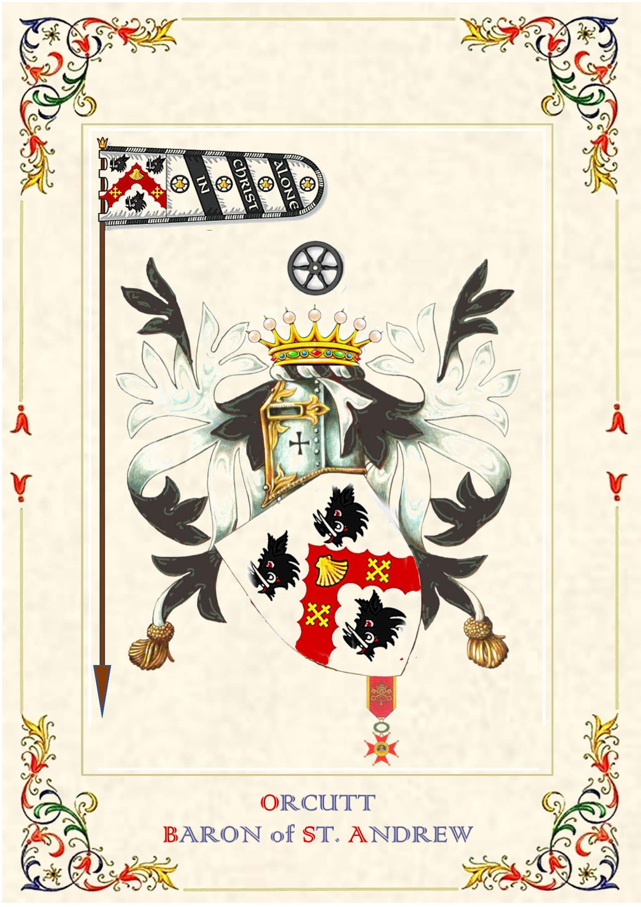

Baron of Saint Andrew the Apostle of the Imperial House of Tiberius Dobrynia.
The personal record identifies a Knight Commander distinction associated with the Order of St. Gregory the Great in 2018.
Grand Cross in the Temple of Jerusalem; invested into OSMTH/SMOTJ in 2009 and later serving as Chancellor General.
Grand Cross of Justice of the Royal Confraternity of Saint Teotonio, awarded in 2023.
Admitted at Grand Cross level in the International Knightly Order Valiant of St. George in 2020.
Gold-level President's Volunteer Service Award recorded for 2024.
Commissioned a Kentucky Colonel in 2023 by Governor Andy Beshear.
Knight in the Order of the Fleur de Lys.
Knight in the Military Order of Saint Sebastian (also known as the Order of the Arrow).

Post-nominals identify distinctions from different organizations and traditions; they are presented as part of Kurtis Orcutt's personal and ceremonial record rather than as academic equivalencies.